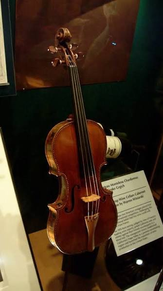

A violin is a wooden instrument thats been around since the earliest 16th century. This instrument is a part of the string category. It has 4 strings but special ones can be combined with a viola to have 5 strings. The strings in order are...
There are many different techniques that can be mastered. The easiest way is to just get to know the right form. The correct posture for playing are things like your wrist cannot touch the fingerboard. Your fingers shpuld be straight. Your thumb ust be standing when on the bow. etc etc..

credits to Wikimedia for image
there is a folklore tale about the stradivarius violins. The myth is that they produce a perfect sound. The original ones were made by Antonio Stradivari. A famous man who made around 600 violins in his liferime. Up until now one of the original stradivarius's are worth up to a million dollars.
credits to STORE NORSKE LEKSIKON for the image